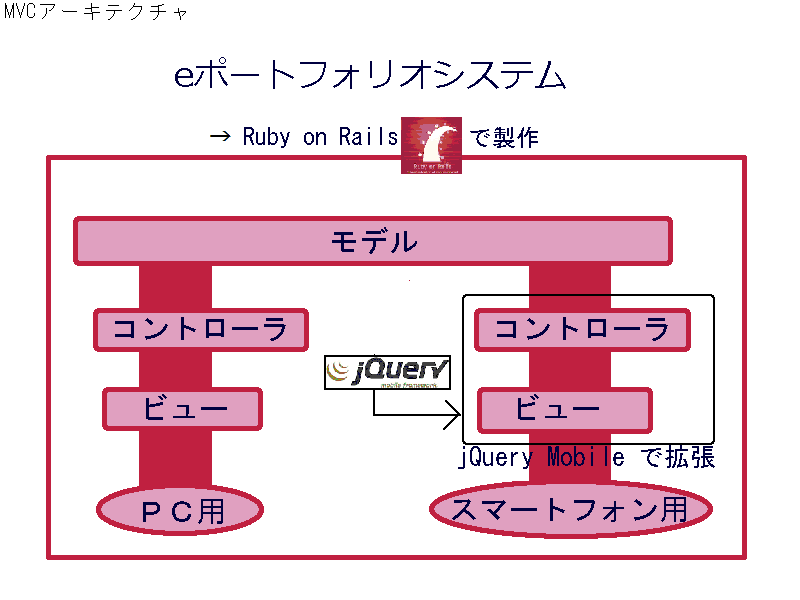

テーマ
活動目的
問題
活動内容
スケジュール
活動結果
後期の活動
前期からの学び
まとめ
スマートフォンへの対応に向けたeポートフォリオシステムの拡張
スマートフォンからeポートフォリオシステムを利用することができない*
スマートフォンの制約（仮
*柵富雄, eポートフォリオとeパスポートによる地域人材認定システムの開発と学習成果を生かした社会参加促進に関する研究, http://www.mext.go.jp/b_menu/shingi/chukyo/chukyo2/siryou/attach/1321508.htm, 2012/08/21取得
eポートフォリオシステムの利便性を向上させるため
アジャイルソフトウェア開発を導入するため
テスト駆動開発を学習するため
バージョン管理を学習するため
グループが多数あるようなときにスマートフォンで見るのが大変
PC版のページが縮小表示されるのでボタンやリンクが押しにくく、画像も小さく表示されみにくい
キーボードよりフリック入力だと長文を打つ際に大変
スマートフォン向けのナビゲーションを考える
スマートフォンで行いたい作業を考える
|
スマートフォンに最適化されたWebフレームワークを使用する
スマートフォン向けのナビゲーションを実現する
ナビゲーションのテストを自動化する
|
 |
アジャイルソフトウェア開発が世界で普及している
いきなり全部導入するのは難しい
XPのプラクティスを一部実施
GitHubを用いて、複数人でソースコードをバージョン管理する
分散VCSによるバージョン管理
テスト駆動開発
がんとチャート
jQuery Mobileの学習
２年生が各自Rubyの勉強会を実施
開発環境導入
学習した内容を書く
バージョン管理の方法
Rubyの基本的な文法の勉強会
seleniumの使い方
実際にテストした アジャイルの流れ
開発にはいる テスト駆動をやる railsをやる プロジェクトとの情報共有 機能検討
スケジュールの都合で、２年生のみで演習を行うことがあり作業がうまく進まないことがあった
初めて触る技術では思わぬところで時間がかかってしまうことが分かった
/
#